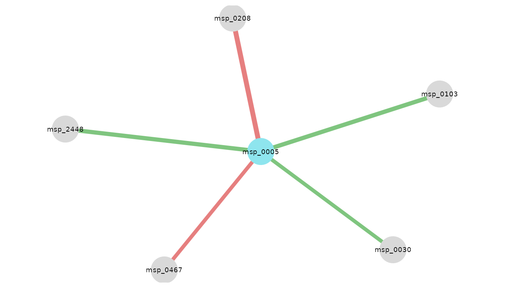
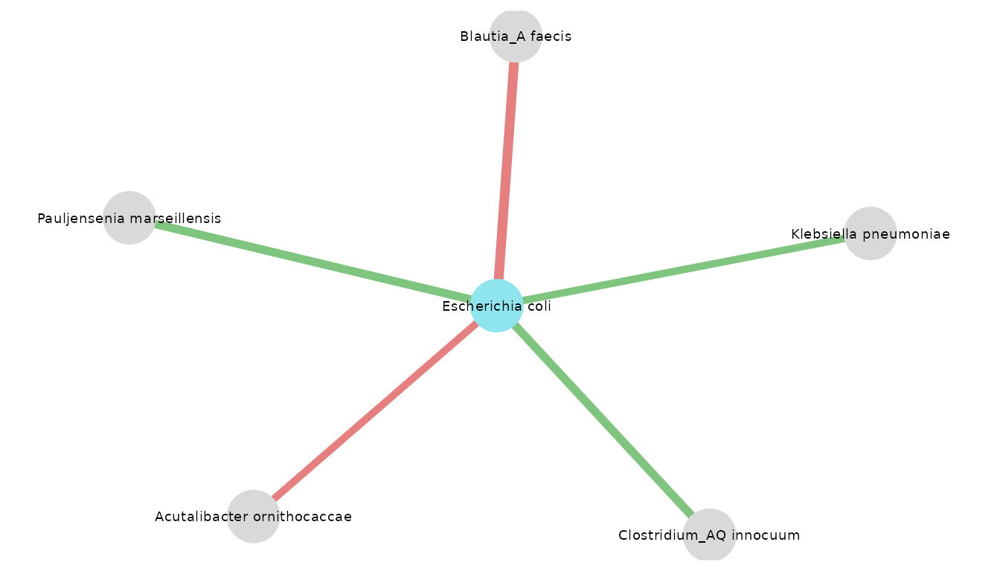
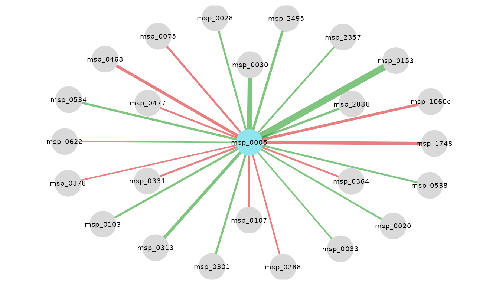
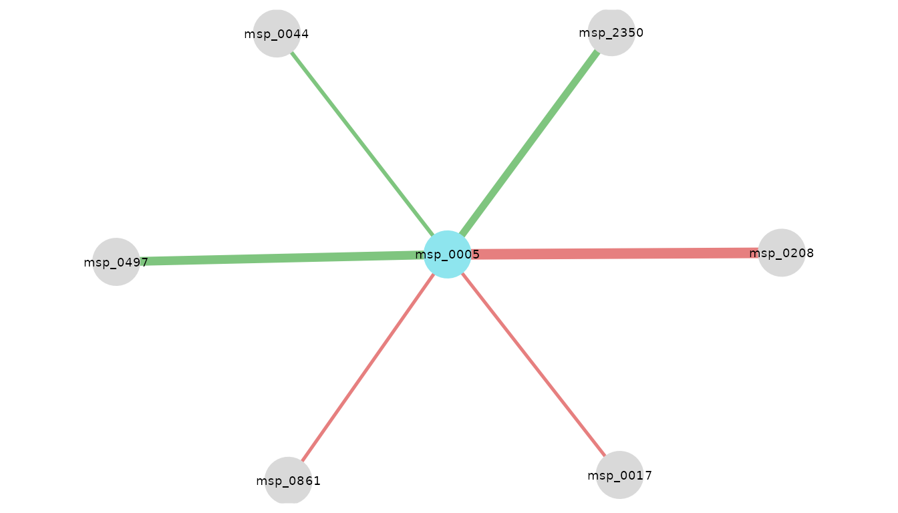
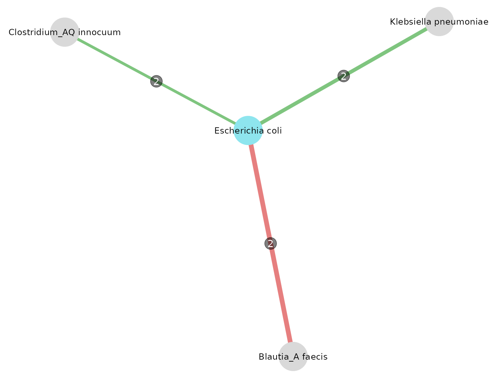

Use case
NeighborFinder_vignette.Rmd
library(rmarkdown)
library(knitr)
library(neighborfinder)
#>
#> Attaching package: 'neighborfinder'
#> The following object is masked from 'package:rmarkdown':
#>
#> metadataPresentation of dataset: CRC Example
The data provided in the package was extracted from this repository: Taxonomic profiles, functional profiles and manually curated metadata of human fecal metagenomes from public projects coming from colorectal cancer studies
Three subgroups are defined following 3 geographic areas: Japan, China and Europe (gathering Italy, Austria, Germany and France). The focus is on patients with colorectal cancer.
Preview of the data
Below, each object needed in this tutorial is loaded and a preview is displayed.
1) The abundance table
Here is a preview of what an abundance table from the data object looks like, with species as rows and samples as columns. The first column is the taxonomic annotation at the species level, the second one is the module ID, and then each column is a sample.
| species | msp_id | DRS091121 | DRS091048 | DRS091122 |
|---|---|---|---|---|
| Blastocystis sp. subtype 3 | msp_0001 | 0e+00 | 0e+00 | 0e+00 |
| Blastocystis sp. subtype 1 | msp_0002 | 0e+00 | 0e+00 | 0e+00 |
| Bacteroides cellulosilyticus | msp_0003 | 0e+00 | 8e-07 | 2e-07 |
| Blastocystis sp. subtype 2 | msp_0004 | 0e+00 | 0e+00 | 0e+00 |
| Escherichia coli | msp_0005 | 1e-07 | 9e-07 | 0e+00 |
2) The metadata
The metadata gathers characteristics (in columns) for each sample (in rows).
| sample | HQ_clean_read_count | gut_mapped_read_count | gut_mapped_pc | oral_mapped_read_count |
|---|---|---|---|---|
| DRS091371 | 39159954 | 32390300 | 82.7128142183211 | 32390300 |
| DRS091370 | 35443586 | 28999607 | 81.8190546520885 | 28999607 |
| DRS091369 | 43922552 | 36841645 | 83.8786530436574 | 36841645 |
| DRS091368 | 29627016 | 25334944 | 85.5129790998864 | 25334944 |
| DRS091366 | 49606076 | 41361270 | 83.3794432762632 | 41361270 |
3) The taxonomy
The taxonomic file indicates for each msp (i.e. metagenomic species) its species and genus annotation as well as the catalog in which the msp is mostly found.
| msp_id | species | genus | catalogue |
|---|---|---|---|
| msp_0001 | Blastocystis sp. subtype 3 | Blastocystis | gut |
| msp_0002 | Blastocystis sp. subtype 1 | Blastocystis | gut |
| msp_0003 | Bacteroides cellulosilyticus | Bacteroides | gut |
| msp_0004 | Blastocystis sp. subtype 2 | Blastocystis | gut |
| msp_0005 | Escherichia coli | Escherichia | gut & oral |
4) The graph
This dataframe is an adjacency matrix encoding the graph with
“cluster-like” structure produced with graph_step(). A
value of 1 corresponds to an edge. This object is needed to simulate
semi-synthetic data.
| msp_0003 | msp_0005 | msp_0007 | msp_0008 | msp_0009 | |
|---|---|---|---|---|---|
| msp_0003 | 0 | 0 | 0 | 0 | 0 |
| msp_0005 | 0 | 0 | 0 | 0 | 0 |
| msp_0007 | 0 | 0 | 0 | 0 | 0 |
| msp_0008 | 0 | 0 | 0 | 0 | 0 |
| msp_0009 | 0 | 0 | 0 | 0 | 0 |
| msp_0142 | msp_0145 | msp_0146c | msp_0147 | |
|---|---|---|---|---|
| msp_0009 | 0 | 0 | 0 | 0 |
| msp_0010 | 0 | 0 | 0 | 0 |
| msp_0011 | 0 | 0 | 0 | 0 |
| msp_0012 | 0 | 0 | 1 | 0 |
| msp_0013 | 0 | 0 | 0 | 0 |
| msp_0014 | 0 | 1 | 0 | 1 |
Aim of this use case
In this example, we are focusing on Escherichia coli because it is one bacterium that is associated with colorectal cancer (CRC). Here is the article mentionning it. Some E. coli strains can produce colibactin, which is a toxin inducing DNA damage that may lead to colorectal cancer.
The goal here is to explore the ecosystem around E. coli by identifying its direct neighbors in patients with colorectal cancer.
Test if the default parameters of NeighborFinder are suitable for your species of interest & dataset
This function enables one to test the NeighborFinder method for different parameter values thanks to simulated data based on the provided dataset. There will be different performance scores depending on the species of interest and the dataset provided.
To do this step, generating a graph is needed.
It is recommended to save it to make next steps quicker. This step was commented since it takes few minutes to execute and also because it is included in the ‘graphs’ object.
# G <- graph_step(data_with_annotation = data$CRC_JPN_CHN_EUR,
# col_module_id = "msp_id",
# annotation_level = "species"
# )
G <- graphs$CRC_JPN_CHN_EURNeighborFinder uses by default the level of prevalence of 30% and
filtering the top 20%. If the results from the table rendered by
choose_params_values() indicate better performance scores
at other values of these parameters, the user can adjust the
prev_level and filtering_top parameters in the
function apply_NeighborFinder().
choose_params_values(
data_with_annotation = data$CRC_JPN,
object_of_interest = "Escherichia coli",
sample_size = 100,
prev_list = c(0.20, 0.25, 0.30),
filtering_list = c(10, 20, 30),
graph_file = graphs$CRC_JPN,
col_module_id = "msp_id",
annotation_level = "species"
) %>%
dplyr::mutate(filtering_top = as.numeric(filtering_top)) %>%
as.data.frame() %>%
kable()
#> Defining and saving true neighbors...
#> Calculating scores...| prev_level | filtering_top | F1_before | F1_after |
|---|---|---|---|
| 0.20 | 10 | 0.0120 | 0.00 |
| 0.20 | 20 | 0.0120 | 0.00 |
| 0.20 | 30 | 0.0120 | 1.00 |
| 0.25 | 10 | 0.0130 | 0.67 |
| 0.25 | 20 | 0.0130 | 1.00 |
| 0.25 | 30 | 0.0130 | 1.00 |
| 0.30 | 10 | 0.0058 | 0.67 |
| 0.30 | 20 | 0.0058 | 1.00 |
| 0.30 | 30 | 0.0058 | 1.00 |
The displayed table indicates the F1 scores (harmonic mean of
precision and recall) before and after applying the NeighborFinder
method, for each prev_level and filtering_top
parameters tested. In this example, one of the combinations enabling a
satisfying performance is prev_level=0.30 and
filtering_top=30.
Note that this step is optional, and a summary of the expected performance scores (calculated on 8 semi-synthetic simulated datasets) is shown in Fig.4 of the Tech report.
Apply NeighborFinder & look for Escherichia coli neighbors in CRC patients
Running apply_NeighborFinder() renders a dataframe
gathering all neighbors of your species of interest. The required data
format in input is as follows: species are the rows and samples are the
columns. The first column must be the species name, the second is the
msps name, and each subsequent column is a sample (see above for the
abundance table preview).
# JAPAN
res_CRC_JPN <- apply_NeighborFinder(
data_with_annotation = data$CRC_JPN,
object_of_interest = "Escherichia coli",
col_module_id = "msp_id",
annotation_level = "species",
prev_level = 0.30,
filtering_top = 30
)
res_CRC_JPN %>% kable()| node1 | node2 | coef |
|---|---|---|
| msp_0005 | msp_0030 | 0.0872394 |
| msp_0005 | msp_0103 | 0.0997908 |
| msp_0005 | msp_0208 | -0.1143868 |
| msp_0005 | msp_0467 | -0.0870316 |
| msp_0005 | msp_2448 | 0.0988908 |
Visualize the corresponding network
Here is a visualization of NeighborFinder results.
It is possible to adjust the size of nodes and labels. One can also
define the color of nodes corresponding to their species of interest.
The taxo_option generates the same network but with species
names instead of msps ones.
visualize_network(
res_CRC_JPN,
taxo,
object_of_interest = "Escherichia coli",
col_module_id = "msp_id",
annotation_level = "species",
label_size = 5
)
visualize_network(
res_CRC_JPN,
taxo,
object_of_interest = "Escherichia coli",
col_module_id = "msp_id",
annotation_level = "species",
label_size = 5,
annotation_option = TRUE,
seed = 2
)
Apply NeighborFinder with covariate option
Including covariates makes it possible to correct for the effect of external factors (e.g. the sequencing technology used to generate the data, the extraction method) that can introduce bias or variability into the observations. This allows the model to better distinguish between what is part of the true structure in the network and what is simply due to technical or contextual differences.
Here is an example of applying the same method, but giving a covariate: in this case, the name of the study. To include a covariate, the function would run only if the following all 3 arguments are given:
covar: takes a formula or the name of the column of the covariate in the metadata table. Note that “study_accession” is equivalent to~study_accession.meta_df: the dataframe giving metadata information.sample_col: the name of the column in metadata indicating the sample names, it should be consistent with the colnames of “data_with_taxo”.
# On CRC patients
# CHINA
res_CRC_CHN <- apply_NeighborFinder(
data$CRC_CHN,
object_of_interest = "Escherichia coli",
col_module_id = "msp_id",
annotation_level = "species",
prev_level = 0.30,
filtering_top = 30,
covar = ~study_accession,
meta_df = metadata$CRC_CHN,
sample_col = "secondary_sample_accession"
)
# EUROPE
res_CRC_EUR <- apply_NeighborFinder(
data$CRC_EUR,
object_of_interest = "Escherichia coli",
col_module_id = "msp_id",
annotation_level = "species",
prev_level = 0.30,
filtering_top = 30,
covar = ~study_accession,
meta_df = metadata$CRC_EUR,
sample_col = "secondary_sample_accession"
)
visualize_network(
res_CRC_CHN,
taxo,
object_of_interest = "Escherichia coli",
col_module_id = "msp_id",
annotation_level = "species",
label_size = 5
)
visualize_network(
res_CRC_EUR,
taxo,
object_of_interest = "Escherichia coli",
col_module_id = "msp_id",
annotation_level = "species",
label_size = 5
)
Look at the intersection of neighbors found in the 3 subgroups
Here is an example of how to merge the results of several datasets
into a single network. This operation can be performed with 2 or more
datasets. One can choose the visualization threshold,
corresponding to the minimum number of datasets in which neighbors have
been found.
intersections_network(
res_list = list(res_CRC_JPN, res_CRC_CHN, res_CRC_EUR),
taxo,
threshold = 2,
"Escherichia coli",
col_module_id = "msp_id",
annotation_level = "species",
label_size = 7,
edge_label_size = 4,
node_size = 15,
annotation_option = TRUE,
seed = 3
)
Another function used here is equivalent to the network thanks to a
summary table, indicating in which datasets intersections were found
above the set threshold.
intersections_table(
res_list = list(res_CRC_JPN, res_CRC_CHN, res_CRC_EUR),
threshold = 2,
taxo,
col_module_id = "msp_id",
annotation_level = "species",
"Escherichia coli"
) %>% kable()| node1 | module1 | node2 | module2 | datasets | intersections | mean_coef |
|---|---|---|---|---|---|---|
| msp_0005 | Escherichia coli | msp_0030 | Klebsiella pneumoniae | n_ 1, n_ 2 | 2 | 0.1006331 |
| msp_0005 | Escherichia coli | msp_0103 | Clostridium_AQ innocuum | n_ 1, n_ 2 | 2 | 0.0744551 |
| msp_0005 | Escherichia coli | msp_0208 | Blautia_A faecis | n_ 1, n_ 3 | 2 | -0.1269152 |
One of the resulting neighbors is Klebsiella pneumoniae. It is also described in this article as a bacterium associated with CRC, producing the same toxin.
The article summarized the prevalence of pks positive E. coli and K. pneumoniae in CRC patient samples. pks stands for polyketide synthase, K. pneumoniae genes can synthetize a bacterial toxin which is colibactin.
“It seems that pks positive bacteria can induce mutation of CRC driver genes and, therefore, pks may become a marker of CRC carcinogenesis and therapy.” (N. Strakova, K. Korena, R Karpiskova, 2021)